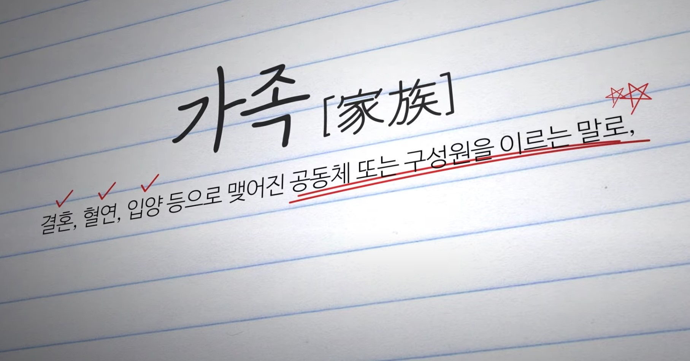

|
 |  |
 |
더불어 살아가는 지혜(3분 33초) 서로 배려하고 함께 나누는 공동체의 삶에 대한 메시지 전달 |
다양한 형태의 가족을 소개하며 가족에 대한 편견을 인식(2분 10초) 조손 가족, 한부모 가족, 입양가족 등 다양한 가족의 형태를 소개하며 가족에 대한 편견 개선 |
너에게로 닿는 길-디스를 넘어서 각자가 지닌 가치를 이해하고 차별이 아닌 차이의 관점에서 서로를 바라보는 태도 기르기 |
너에게로 닿는 길-달라도 너무 다른 너, 어떻게 대처해야 할까? (73-74p) 다른 사람의 입장을 고려하고 배려하는 사람은 손해를 보는 것 같은 기분이 들 때 배려가 지닌 힘에 대한 가치를 고민해보고 실천화 |